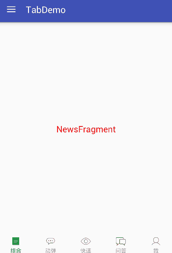
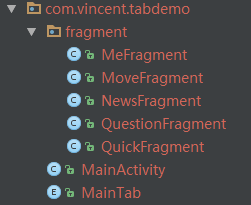
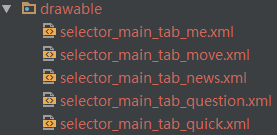
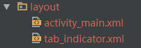
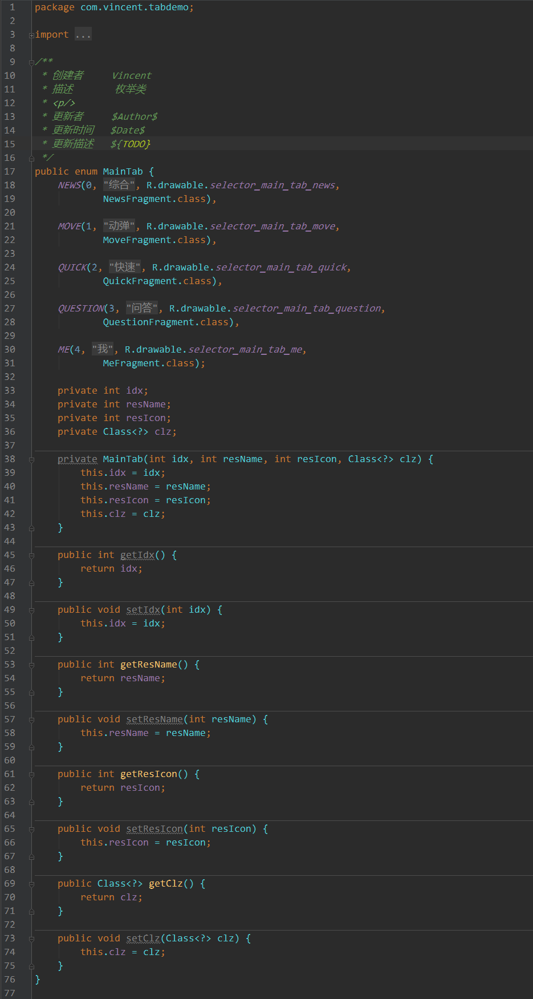
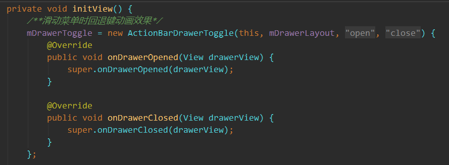
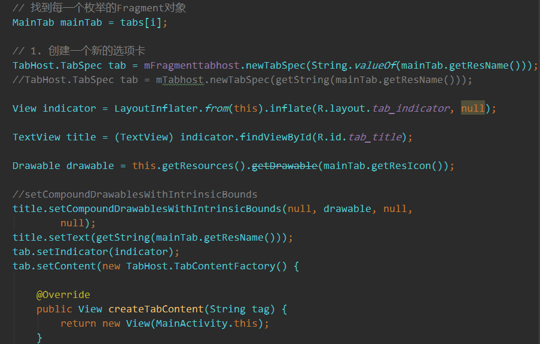

这次带来的是一个简单UI框架，不知你们是否需要。主要用到FragmentTabHost+Fragment+DrawerLayout实现。
献上效果图：

项目结构图：
java代码，包括五个Fragment，一个枚举类

五个图片选择器，对应底部导航选中后的图片

布局文件

现在很多的App都有底部导航实现了之间的切换，我们知道如果要实现底部导航有多种实现方法，比如常用的RadioGroup+ViewPager,而我们这次使用FragmentTabHost+Fragment来实现这个功能。如果你的项目中使用到了这些功能可以直接使用。
贴上核心代码：

这是一个枚举类，里面放了五个Fragment
MainActivity.java代码稍微有点长就不贴出来了，主要是实现FragmentTabHost初始化和DrawerLayout初始化
核心代码


这里就不过多解释，有需要的同学可以到我的GitHub下载
联系方式：lijiandongv@163.com 有什么问题或者建议欢迎留言到我的邮箱
每日一碗鸡汤 在这人世间，有些路是非要单独一个人去面对，单独一个人去跋涉的，路再长再远，夜再黑再暗，也得独自默默地走下去。